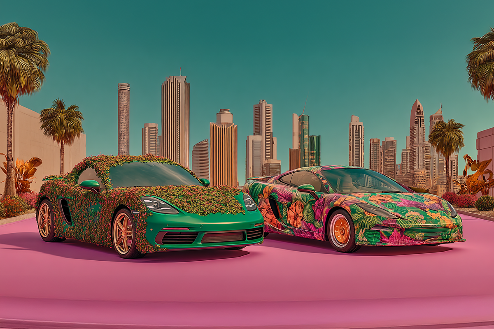
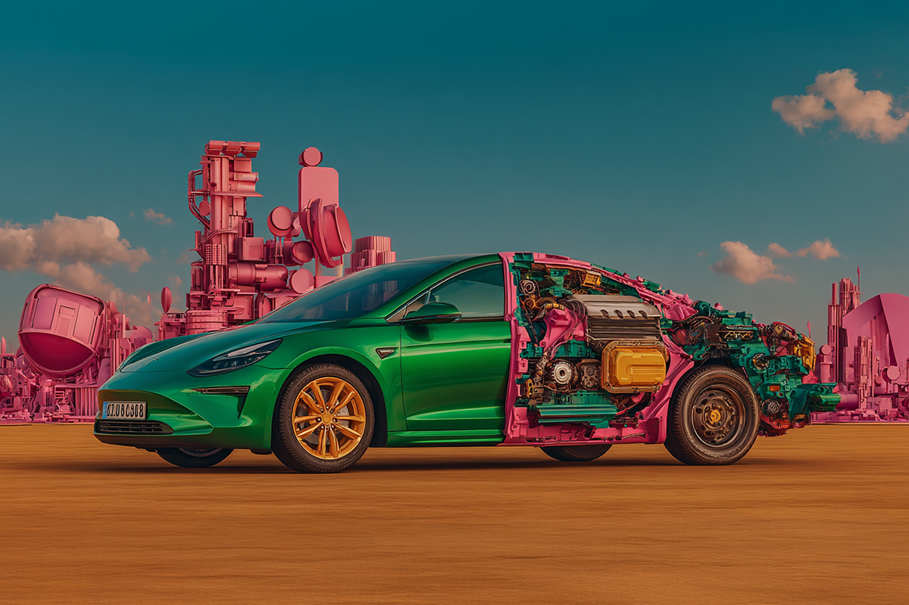
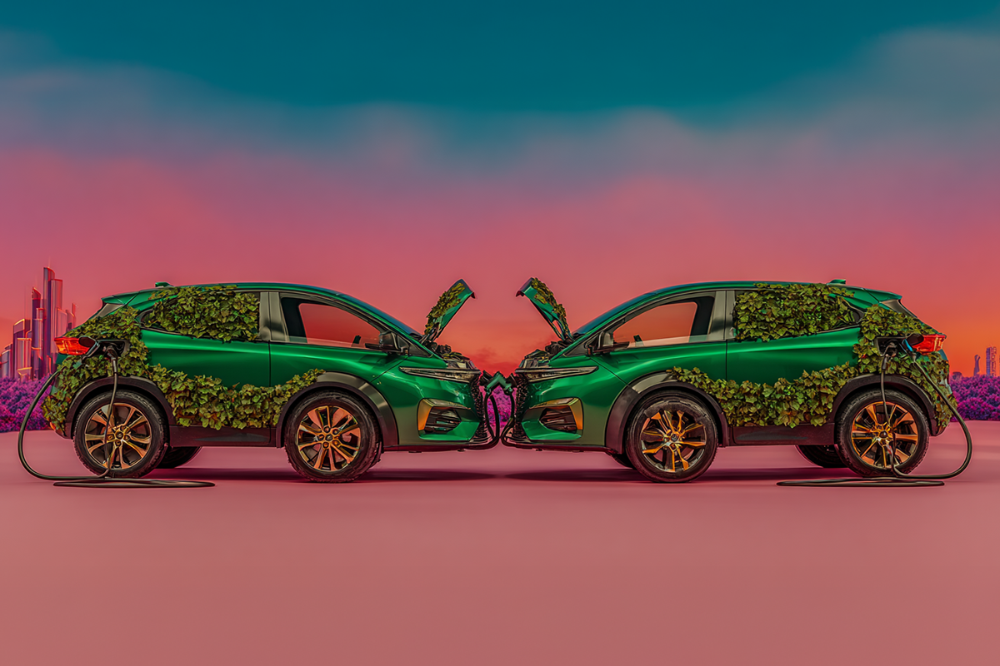

El dilema de los autos eléctricos
¿Realmente son tan verdes como creemos?
¿Realmente son tan verdes como creemos?

Mucho se ha hablado de los autos eléctricos en los últimos años. El bajo nivel de emisiones en un contexto de calentamiento global obviamente ha hecho que el tema esté cada vez más en los titulares. Tanto así, que se han comenzado a entregar beneficios económicos por tener autos eléctricos, y en Europa se han creado zonas en ciudades que son “cero emisiones”, es decir, donde no pueden entrar vehículos a combustión.

Si bien el tema de las emisiones es uno que ha sido muy estudiado, el tema de la fabricación no lo ha sido tanto. Hace un tiempo, Volvo sacó un estudio planteando un dilema interesante: producir un auto eléctrico contamina un 70% más que producir uno de gasolina, tramo que después se compensa al contaminar menos durante su vida útil.
El tema es que se compensa casi equitativamente. Es decir, el saldo a favor no es considerablemente notorio con respecto a un auto normal. ¿Vale entonces la pena? Depende de dónde lo mires.

El centro del asunto se reduce a la batería del auto, porque la mayor parte de la contaminación viene de ahí. Según Volvo, el EC40 (eléctrico) y el XC40 (en su versión gasolina) se construyen en las mismas fábricas usando las mismas líneas de montaje. La producción de materiales para el EC40 genera 18 toneladas de CO2, mientras que el XC40 genera 14 toneladas. No es una diferencia tan radical.
¿Dónde se genera el impacto, entonces? En las baterías de ion de litio. El EC40 genera siete toneladas más de CO2 por solo este ítem, que no son totalmente recuperables. Si tomamos como ejemplo un recorrido de 200.000 kilómetros, el XC40 generaría 59 toneladas de CO2. Para el modelo eléctrico, esto varía según de dónde venga la electricidad para cargarlo. Si el origen es 100% renovable, el EC40 generaría 0,4 toneladas en esos mismos kilómetros. En total, el eléctrico fabricaría solo 27 toneladas de CO2 en toda su vida.
Pero, obviamente, es un poco utópico pensar que un auto eléctrico solo se va a cargar usando fuentes renovables. Si se toma como referencia el mix actual de energía que se usa en el mundo, el EC40 generaría 50 toneladas de CO2. Son solo nueve toneladas de diferencia con el auto a combustión: una diferencia grande, pero no espectacular ni suficiente para generar un impacto global.
La conclusión obvia —que es también a la que llega Volvo en su estudio— es que si queremos que los autos eléctricos tengan un impacto real, se tiene que incrementar la energía renovable disponible para cargarlos.
Mientras eso no sea posible, ellos aconsejan el uso de autos con baterías más pequeñas para manejar en la ciudad, o con motores más eficientes para distancias largas: los famosos autos híbridos. Al menos, mientras el mundo no consiga llegar a un mix eléctrico más verde que el actual.
Más allá de la eficiencia energética y de la promesa de reducir emisiones, quizás el dilema es mayor: ¿qué tan sostenible es cómo nos movemos? La producción de baterías de litio no solo impacta en su producción, sino también en su reciclaje. En esa línea, algunos plantean que quizás el verdadero cambio no va por la electromovilidad, sino por un punto intermedio: los vehículos híbridos. Con esto, se tendría lo mejor de dos mundos, porque durante su vida útil contaminan menos que los de combustión y al minuto de reciclar las baterías el nivel de contaminación también es más bajo.
¿Qué opinas?